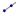

Ray[Point A, Point B]: Creates a ray starting at point A through point B.
Ray[Point, Vector v]: Creates a ray starting at the given point which has the direction vector v.
Note: Also see tool  Ray through Two Points